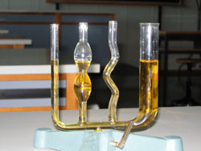
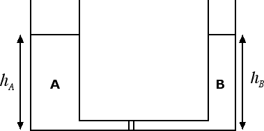

Equilibrio nei fluidi
Legge di Stevino
Se mettiamo in comunicazione due o più tubi riempiti dello stesso liquido, il livello raggiunto dal liquido nei tubi è lo stesso indipendentemente dalla forma, dalle dimensioni e dalla sezione dei tubi comunicanti. Questo è l'enunciato del principio dei vasi comunicanti. La giustificazione di questo principio risiede in una legge più generale, detta legge di Stevino che andremo ora ad enunciare.

Cominciamo con il chiederci quanto vale la pressione idrostatica, ossia la pressione che un liquido, per il fatto di essere dotato di massa, esercita sul fondo del recipiente che lo contiene. Supponiamo, per fissare le idee, che un liquido di volume V abbia una densità d e sia contenuto in un recipiente cilindrico avente area di base A. La pressione che il liquido esercita sul fondo del bicchiere è pari alla forza-peso del liquido F divisa per l'area di base del recipiente: p = F / A. Dalla densità d = m / V possiamo ricavarci la massa m = d · V e da questa la forza-peso del liquido F = g · m = g · d · V.
La pressione che il liquido esercita sul fondo del bicchiere è uguale a p = F / A = g · d · V / A. Ricordando che il volume del liquido è V = A · h dove h è l'altezza della colonna di liquido possiamo riscrivere la pressione esercitata sul fondo come: p = g · d · A · h / A = g · d · h. Pertanto la pressione idrostatica p dipende unicamente dalla densità d del liquido e dalla sua altezza h. Non dipende in alcun modo né dalla forma del recipiente né dalla sua sezione A. Questo è l'enunciato della cosiddetta legge di Stevino.
Per essere precisi dovremo in generale considerare anche il contributo dovuto alla pressione dell'atmosfera posta al di sopra della colonna di liquido e che si va a sommare alla pressione idrostatica: p = g · d · h + patm, dove patm = 1.013 · 105 Pa. Questa legge va sotto il nome di legge di Stevino generalizzata.
Usando la legge di Stevino, possiamo derivare il principio dei vasi comunicanti. Infatti consideriamo la figura sottostante:

Sulla parte di liquido posto sul fondo del recipiente e indicata in figura agiscono la pressione dovuta al liquido A che, in base alla legge di Stevino, è data da pA = g · d · hA e la pressione dovuta al liquido B, data da pB = g · d · hB. Siccome il liquido è in equilibrio le due pressioni devono essere uguali tra loro, ossia: g · d · hA = g · d · hB e, dividendo per la densità del liquido e la costante g = 9.8 N / kg otteniamo come risultato finale che hA = hB, ossia l'enunciato del principio dei vasi comunicanti: l'altezza raggiunta dal liquido nei due vasi comunicanti è la stessa. Questa proprietà dei liquidi viene utilizzata anche in edilizia: ad esempio, con un tubo di gomma ad U contenente lo stesso liquido si riesce ad allineare la posizione delle finestre di un edificio posto su un terreno scosceso.
Il discorso cambia se i due liquidi sono diversi. In tal caso, infatti, abbiamo che le densità sono diverse, pertanto la nuova condizione di equilibrio g · dA · hA = g · dB · hB fornisce per il rapporto tra le altezze la formula: hA / hB = dB / dA. Le altezze raggiunte dai due liquidi sono pertanto diverse e, in particolare, il liquido di densità maggiore raggiunge un'altezza minore e viceversa.